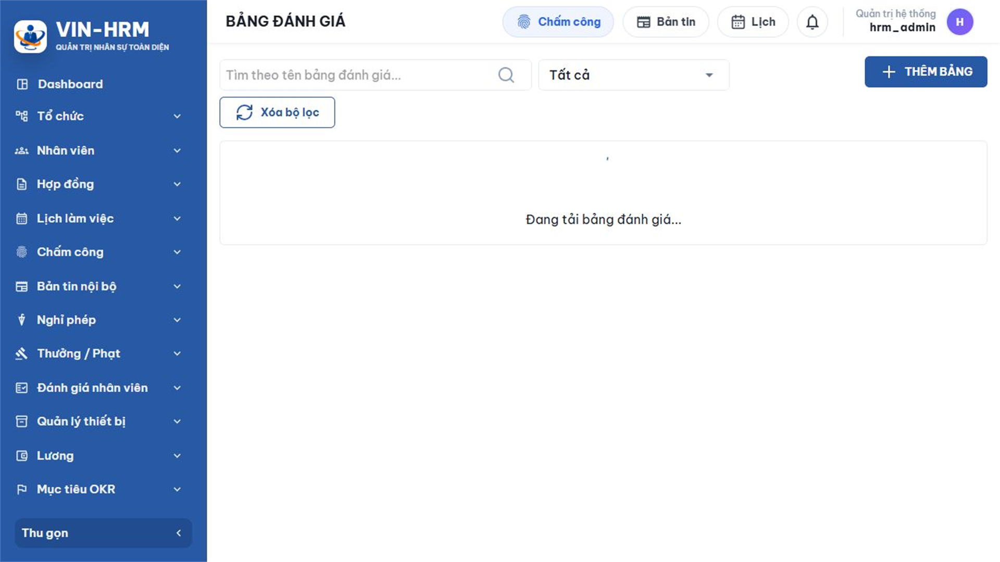
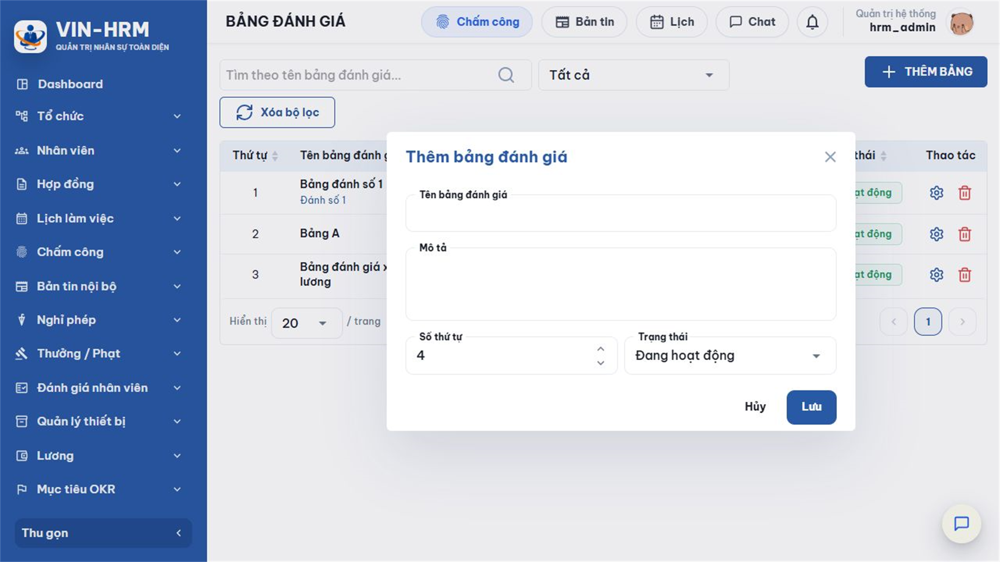
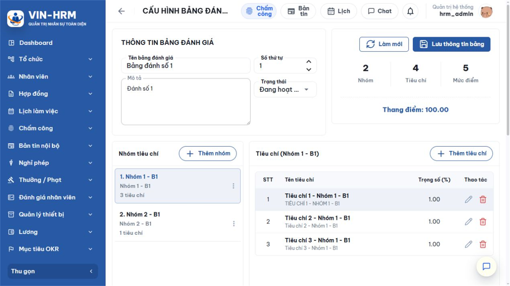
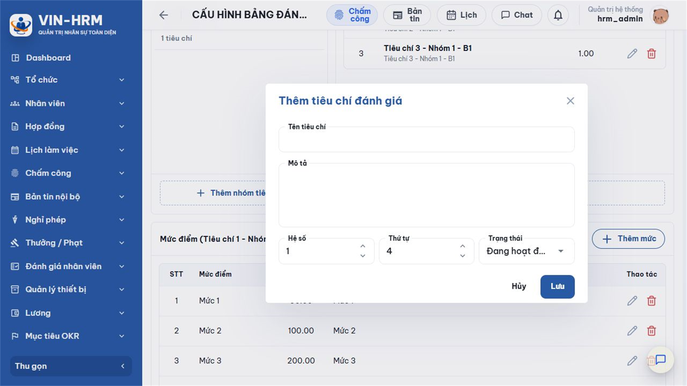
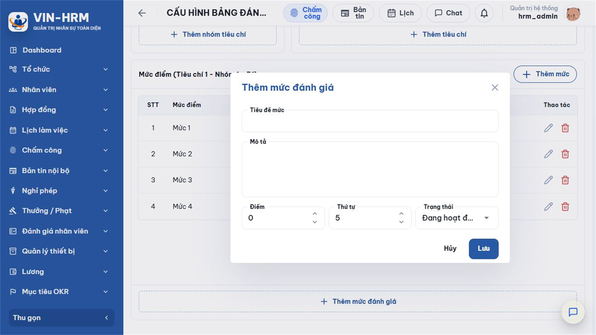

1. Mục đích, cấu trúc và luồng thiết lập
Bảng đánh giá là mẫu chấm điểm dùng lại cho nhiều phiếu và nhiều kỳ. Bảng xác định “đánh giá điều gì”, “mức độ quan trọng ra sao” và “mỗi mức đạt được bao nhiêu điểm”. Có thể tạo các bảng riêng cho DEV, QC, BA, Nhân sự, thử việc, sau dự án, xét lương, thưởng hoặc bổ nhiệm.
Một Bảng đánh giá tốt phải phản ánh đúng mục đích sử dụng, có tiêu chí cụ thể, hệ số hợp lý và mô tả mức điểm đủ rõ để nhiều người chấm có cách hiểu thống nhất.
1.1. Cấu trúc bốn tầng
| BẢNG ĐÁNH GIÁ Ví dụ: Bảng đánh giá xét tăng lương |
| ↓ |
| NHÓM TIÊU CHÍ Ví dụ: Chất lượng công việc, Năng lực chuyên môn, Thái độ |
| ↓ |
| TIÊU CHÍ + HỆ SỐ Ví dụ: Kết quả công việc, hệ số 5 |
| ↓ |
| MỨC ĐÁNH GIÁ + ĐIỂM Ví dụ: Không đạt (1) → Đạt (3) → Vượt mong đợi (5) |
1.2. Luồng thiết lập nên thực hiện
| 1. Xác định mục đích Ai được đánh giá, dùng kết quả để làm gì, chu kỳ nào. |
| ↓ |
| 2. Tạo Bảng đánh giá Nhập tên, mô tả, thứ tự; có thể để Ngừng hoạt động trong lúc chuẩn bị. |
| ↓ |
| 3. Tạo Nhóm tiêu chí Gom các nội dung cùng chủ đề để biểu mẫu dễ đọc. |
| ↓ |
| 4. Tạo Tiêu chí Viết tiêu chí cụ thể → gán hệ số → sắp thứ tự. |
| ↓ |
| 5. Tạo Mức đánh giá Khai báo tiêu đề, điểm và mô tả cho từng tiêu chí. |
| ↓ |
| 6. Kiểm tra và đưa vào dùng Đối chiếu thang điểm → chấm thử → chuyển Bảng, Nhóm, Tiêu chí và Mức cần dùng sang Đang hoạt động. |
2. Điều kiện và phân quyền
Người dùng cần quyền Evaluation.Template để mở Đánh giá nhân viên > Bảng đánh giá và tạo, sửa, xóa Bảng, Nhóm, Tiêu chí, Mức đánh giá. Quyền này chỉ dùng cho thiết kế mẫu; muốn tạo phiếu hoặc Kỳ đánh giá còn cần Evaluation.Create hoặc Evaluation.DirectManager.
| Dữ liệu chuẩn bị | Khuyến nghị |
|---|---|
| Mục đích đánh giá | Chốt trước thử việc, định kỳ, dự án, xét lương, thưởng hay bổ nhiệm; tránh dùng một bảng quá chung cho mọi mục đích. |
| Danh sách nhóm và tiêu chí | Mỗi tiêu chí phải quan sát hoặc đo lường được; tránh trùng ý giữa các nhóm. |
| Hệ số | Phản ánh mức ảnh hưởng tương đối. Tiêu chí quan trọng hơn có hệ số cao hơn; toàn bộ hệ số phải lớn hơn 0. |
| Mức đánh giá | Nên dùng số mức nhất quán, thường là 5 mức; tiêu đề và mô tả cần phân biệt rõ. |
| Người duyệt nội dung | Nên có đại diện Nhân sự và quản lý chuyên môn kiểm tra trước khi bật Đang hoạt động. |
Chức năng không có công tắc cấu hình hệ thống riêng. Những yếu tố quyết định là quyền Evaluation.Template, trạng thái từng phần tử và việc Bảng có đủ cấu trúc hợp lệ để bắt đầu đánh giá.
3. Danh sách Bảng đánh giá

| Khu vực | Ý nghĩa |
|---|---|
| Tìm theo tên bảng | Lọc theo một phần tên. Nên dùng tên riêng biệt để tìm nhanh. |
| Trạng thái | Đang hoạt động: có thể xuất hiện khi tạo đánh giá nếu đủ cấu trúc. Ngừng hoạt động: giữ để xem lịch sử nhưng không dùng cho phiếu/kỳ mới. |
| Thứ tự | Quy định thứ tự hiển thị tương đối. Có thể sắp xếp từ tiêu đề cột. |
| Nhóm – Tiêu chí | Cho biết nhanh mức độ hoàn thiện. Bảng có 0 nhóm hoặc 0 tiêu chí chưa thể dùng để chấm. |
| Thao tác | Mở cấu hình chi tiết hoặc xóa theo điều kiện. Hãy ưu tiên Ngừng hoạt động nếu bảng đã được sử dụng. |
4. Tạo và khai báo thông tin bảng
Chọn THÊM BẢNG, nhập thông tin rồi chọn Lưu.

| Trường | Quy tắc | Ý nghĩa |
|---|---|---|
| Tên bảng đánh giá | Bắt buộc, tối đa 255 ký tự | Tên được hiển thị khi tạo kỳ và phiếu. Nên gồm mục đích hoặc đối tượng, ví dụ “Đánh giá thử việc – Khối Kỹ thuật”. |
| Mô tả | Không bắt buộc, tối đa 1.000 ký tự | Giải thích phạm vi áp dụng, nguyên tắc chấm hoặc phiên bản nội dung. |
| Số thứ tự | Số nguyên | Điều khiển vị trí hiển thị. Số nhỏ thường đứng trước. |
| Trạng thái | Đang hoạt động / Ngừng hoạt động | Nên chọn Ngừng hoạt động khi còn biên soạn; chỉ bật Đang hoạt động sau khi đã đủ nhóm, tiêu chí và mức điểm. |
Sau khi lưu, mở bảng vừa tạo để cấu hình nội dung. Phần đầu trang cho phép sửa tên, mô tả, thứ tự, trạng thái và hiển thị số nhóm, tiêu chí, mức điểm cùng thang điểm hiện tại.

5. Quản lý Nhóm tiêu chí
Nhóm tiêu chí gom các tiêu chí cùng chủ đề, giúp người chấm đọc biểu mẫu theo từng phần. Ví dụ: “Kết quả công việc”, “Năng lực chuyên môn”, “Hợp tác và thái độ”.
- Trong trang cấu hình bảng, chọn Thêm nhóm hoặc Thêm nhóm tiêu chí.
- Nhập Tên nhóm, Mô tả, Thứ tự và Trạng thái.
- Chọn Lưu. Nhóm xuất hiện ở cột bên trái.
- Chọn nhóm để cấu hình danh sách tiêu chí bên phải.
- Dùng menu ba chấm trên nhóm để Sửa hoặc Xóa.
| Trường | Quy tắc | Cách dùng |
|---|---|---|
| Tên nhóm tiêu chí | Bắt buộc, tối đa 255 ký tự | Đặt theo một chủ đề lớn; không viết thành một câu hỏi chấm điểm. |
| Mô tả | Tối đa 1.000 ký tự | Giải thích phạm vi của nhóm để tránh đưa tiêu chí sai chỗ. |
| Thứ tự | Số nguyên | Quyết định trình tự nhóm trên biểu mẫu đánh giá. |
| Trạng thái | Hai lựa chọn | Đang hoạt động: nhóm và các tiêu chí hợp lệ bên trong được đưa vào phiếu. Ngừng hoạt động: loại toàn nhóm khỏi biểu mẫu mới nhưng vẫn giữ dữ liệu lịch sử. |
| Không dùng trạng thái nhóm để “ẩn tạm” mà quên bật lại Khi nhóm Ngừng hoạt động, toàn bộ tiêu chí bên trong không tham gia tính điểm, dù từng tiêu chí vẫn đang hoạt động. Sau khi chỉnh sửa, kiểm tra trạng thái ở cả Bảng, Nhóm, Tiêu chí và Mức. |
6. Quản lý Tiêu chí và Hệ số
Chọn một nhóm, sau đó chọn Thêm tiêu chí. Tiêu chí là nội dung cụ thể mà người đánh giá phải quyết định mức đạt được.

| Trường | Quy tắc | Ý nghĩa và ví dụ |
|---|---|---|
| Tên tiêu chí | Bắt buộc, tối đa 255 ký tự | Viết ngắn, cụ thể, ví dụ “Hoàn thành công việc đúng hạn”. Tránh tên mơ hồ như “Tốt”. |
| Mô tả | Tối đa 1.000 ký tự | Nêu nội dung quan sát, bằng chứng hoặc phạm vi xem xét. |
| Hệ số | Lớn hơn 0; tối đa theo hệ thống | Là trọng số tương đối. Hệ số 5 có ảnh hưởng gấp năm lần hệ số 1 nếu cùng điểm. Một số màn hình hiển thị tiêu đề “Trọng số (%)”, nhưng giá trị được dùng theo công thức hệ số, không bắt buộc tổng bằng 100. |
| Thứ tự | Số nguyên | Quyết định thứ tự tiêu chí trong nhóm. |
| Trạng thái | Đang hoạt động / Ngừng hoạt động | Chỉ tiêu chí Đang hoạt động trong nhóm đang hoạt động mới xuất hiện khi chấm. |
6.1. Cách chọn hệ số
- Dùng một thang thống nhất, ví dụ 1–5, để người thiết kế dễ so sánh mức quan trọng.
- Hệ số cao cho tiêu chí ảnh hưởng trực tiếp đến mục đích đánh giá; hệ số thấp cho tiêu chí hỗ trợ.
- Không tăng đồng loạt mọi hệ số vì tỷ lệ tương đối không đổi nhưng số tổng trở nên khó đọc.
- Chấm thử một trường hợp tốt, trung bình và yếu để xem hệ số có làm một tiêu chí lấn át toàn bộ kết quả hay không.
| Ví dụ “Kết quả công việc” có hệ số 5, chấm mức 3 → điểm quy đổi 15. “Tinh thần hợp tác” có hệ số 2, chấm mức 4 → điểm quy đổi 8. Dù mức của tiêu chí thứ hai cao hơn, tiêu chí đầu vẫn đóng góp nhiều hơn vì hệ số lớn hơn. |
7. Quản lý Mức đánh giá
Chọn một tiêu chí, sau đó chọn Thêm mức hoặc Thêm mức đánh giá. Mức đánh giá là lựa chọn người chấm sẽ sử dụng, kèm điểm số cụ thể.

| Trường | Quy tắc | Ý nghĩa |
|---|---|---|
| Tiêu đề mức | Bắt buộc, tối đa 255 ký tự | Tên ngắn gọn như “Không đáp ứng”, “Đạt mong đợi”, “Vượt mong đợi”. |
| Mô tả | Tối đa 1.000 ký tự | Nêu biểu hiện cụ thể của mức để giảm chấm theo cảm tính. Mô tả nên khác nhau rõ ràng giữa các mức liền kề. |
| Điểm | Từ 0 trở lên | Số dùng để tính kết quả. Điểm cao hơn nên biểu thị mức tốt hơn, trừ khi doanh nghiệp có quy ước khác được giải thích rõ. |
| Thứ tự | Số nguyên | Quyết định thứ tự hiển thị trong ô chọn mức. |
| Trạng thái | Hai lựa chọn | Đang hoạt động để được chọn khi chấm; Ngừng hoạt động để ngăn dùng cho phiếu mới nhưng giữ lịch sử. |
7.1. Thang 5 mức tham khảo
| Điểm | Tiêu đề | Ý nghĩa tham khảo |
|---|---|---|
| 1 | Không đáp ứng yêu cầu | Kết quả hoặc hành vi thấp hơn rõ rệt so với yêu cầu tối thiểu. |
| 2 | Đáp ứng một phần | Đạt một phần nhưng còn thiếu nội dung quan trọng; cần kế hoạch cải thiện. |
| 3 | Đáp ứng mong đợi | Hoàn thành đúng yêu cầu của vị trí hoặc mục tiêu. |
| 4 | Vượt mong đợi | Kết quả tốt hơn yêu cầu, có đóng góp nổi bật và ổn định. |
| 5 | Vượt xa mong đợi | Kết quả đặc biệt xuất sắc, tạo ảnh hưởng vượt phạm vi thông thường. |
Đây là gợi ý, không phải cấu hình bắt buộc. Doanh nghiệp có thể dùng 3, 4, 5 hoặc nhiều mức; điều quan trọng là mỗi tiêu chí có ít nhất một mức Đang hoạt động và cách hiểu giữa các mức nhất quán.
8. Cách tính điểm và kiểm tra thang điểm
8.1. Công thức
| Kết quả | Công thức | Ý nghĩa |
|---|---|---|
| Điểm quy đổi tiêu chí | Điểm mức × Hệ số | Đóng góp của một tiêu chí vào tổng. |
| Tổng điểm | Tổng điểm quy đổi | Tổng kết quả có xét hệ số. |
| Điểm tối đa | Tổng (điểm mức cao nhất × hệ số) | Mức tối đa có thể đạt với cấu hình hiện tại. |
| Điểm trung bình | Tổng điểm ÷ Tổng hệ số | Đưa kết quả về thang điểm trung bình. |
| Tỷ lệ | Tổng điểm ÷ Điểm tối đa × 100 | Chuẩn hóa kết quả về phần trăm. |
“Thang điểm” hiển thị trên trang cấu hình là điểm trung bình tối đa, được tính từ các Nhóm, Tiêu chí và Mức đang hoạt động. Nếu một tiêu chí có mức cao nhất là 100 trong khi tiêu chí khác cao nhất là 5, thang điểm tổng có thể khó hiểu. Vì vậy nên dùng cùng thang mức cho các tiêu chí trong một bảng.
8.2. Kiểm tra trước khi đưa vào sử dụng
- Mỗi Nhóm cần dùng ở trạng thái Đang hoạt động.
- Mỗi Nhóm có ít nhất một Tiêu chí Đang hoạt động.
- Mỗi Tiêu chí có Hệ số lớn hơn 0 và ít nhất một Mức Đang hoạt động.
- Điểm và thứ tự các Mức đi từ thấp đến cao, mô tả không mâu thuẫn.
- Thang điểm hiển thị phù hợp dự kiến; chấm thử một phiếu và kiểm tra Tổng điểm, Điểm TB, Tỷ lệ.
- Chỉ sau khi kiểm tra xong mới chuyển Bảng sang Đang hoạt động.
9. Trạng thái, sửa, xóa và ảnh hưởng dữ liệu
9.1. Khi cần sửa
Trong trang cấu hình, chọn đúng Nhóm hoặc Tiêu chí; dùng biểu tượng bút chì hoặc menu ba chấm để sửa. Sau khi sửa thông tin bảng ở phần đầu trang, chọn Lưu thông tin bảng. Nút Làm mới tải lại dữ liệu và có thể làm mất nội dung chưa lưu.
| Kết quả cũ được bảo toàn bằng dữ liệu chụp nhanh Phiếu đánh giá đã lưu giữ tên nhóm, tiêu chí, mức, hệ số và điểm tại thời điểm chấm. Sửa cấu hình chủ yếu ảnh hưởng các phiếu tạo sau. Tuy vậy, để báo cáo dễ giải thích, nên tạo Bảng đánh giá mới khi thay đổi lớn thay vì sửa sâu một bảng đang dùng. |
9.2. Khi nào tạo bảng mới
- Thay đổi mục đích sử dụng, ví dụ từ đánh giá thử việc sang xét tăng lương.
- Thay đổi nhiều nhóm, hệ số hoặc thang điểm.
- Cần giữ nguyên một phiên bản cho kỳ cũ và đưa phiên bản mới vào kỳ tiếp theo.
- Phạm vi nghề nghiệp khác biệt, ví dụ DEV và Nhân sự cần bộ tiêu chí riêng.
9.3. Xóa hay Ngừng hoạt động
| Thao tác | Dùng khi | Lưu ý |
|---|---|---|
| Ngừng hoạt động | Dữ liệu đã hoặc có thể đã được sử dụng, nhưng không muốn dùng cho phiếu mới. | Là lựa chọn an toàn, giữ lịch sử và có thể bật lại. |
| Xóa | Tạo nhầm, chưa phát sinh phụ thuộc và chắc chắn không cần giữ. | Có thể bị hệ thống từ chối nếu đang được tham chiếu. Xóa nhóm có thể ảnh hưởng toàn bộ tiêu chí bên trong; đọc kỹ hộp xác nhận. |
10. Lỗi thường gặp và danh sách kiểm tra
| Hiện tượng | Nguyên nhân | Cách xử lý |
|---|---|---|
| Không thấy menu Bảng đánh giá. | Thiếu Evaluation.Template. | Đề nghị quản trị cấp đúng quyền cho vai trò. |
| Bảng Đang hoạt động nhưng không chọn được khi đánh giá. | Thiếu nhóm/tiêu chí/mức hoạt động, hệ số không hợp lệ hoặc không nằm trong phạm vi truy cập. | Kiểm tra lần lượt bốn tầng và chấm thử sau khi lưu. |
| Thang điểm bằng 0. | Không có tiêu chí hoạt động, tổng hệ số bằng 0 hoặc không có mức hoạt động. | Bật và hoàn thiện dữ liệu cần dùng; hệ số phải lớn hơn 0. |
| Kết quả bị lệch quá nhiều về một tiêu chí. | Hệ số của tiêu chí đó quá cao. | Đối chiếu tỷ lệ hệ số giữa các tiêu chí và chấm thử nhiều tình huống. |
| Không xóa được bảng/nhóm/tiêu chí/mức. | Dữ liệu đã được sử dụng hoặc có phần tử con. | Chọn Ngừng hoạt động; chỉ xóa dữ liệu tạo nhầm chưa phát sinh. |
| Mức điểm hiển thị không đúng thứ tự. | Thứ tự khai báo không đúng hoặc trùng. | Sửa Thứ tự theo trình tự mong muốn và tải lại. |
10.1. Danh sách kiểm tra nghiệm thu
- Tên và mô tả nói rõ mục đích, đối tượng áp dụng.
- Nhóm không trùng nội dung; thứ tự hợp lý.
- Tiêu chí cụ thể, có mô tả và hệ số đã được thống nhất.
- Mỗi tiêu chí có đủ mức, điểm và mô tả phân biệt rõ.
- Thang điểm, Điểm TB và Tỷ lệ được kiểm tra bằng phiếu chấm thử.
- Trạng thái Đang hoạt động chỉ bật cho nội dung đã duyệt.
- Nếu thay đổi lớn, đã cân nhắc tạo phiên bản Bảng mới.